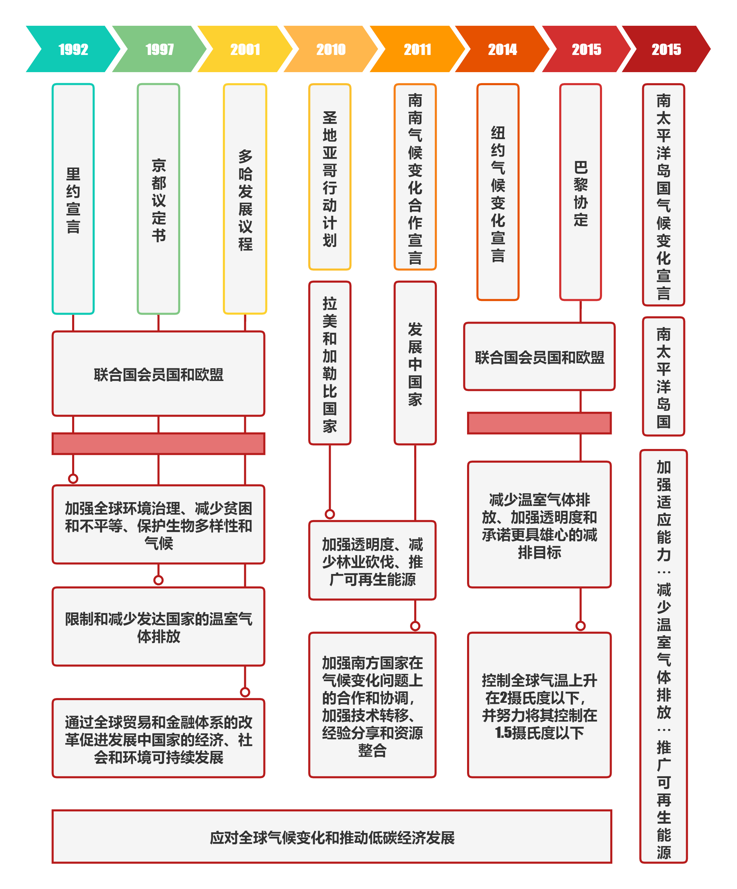

国际净碳历史背景

由国际气候研究中心 (CICERO)高级研究员罗比·安德鲁(Robbie Andrew)绘制的曲线，展现在《巴黎协定》设定的目标下，若将全球平均升温限制在1.5°C和2C内需要的情景。同一个控温目的下，每条曲线代表在不同年份进行碳达峰后，往后几十年内的碳容量，即曲线以下与y轴围成的微分面积，是此年度碳排放的最大限度值，本图摘取了2023年及以后的达峰年份，在2.0摄氏度目标曲线中，2030年份的达峰尤为突出，这与中国的“2030碳中和”目标紧密相关，对中国能否完成国际减碳目标任务的预测和支撑，有重要作用。